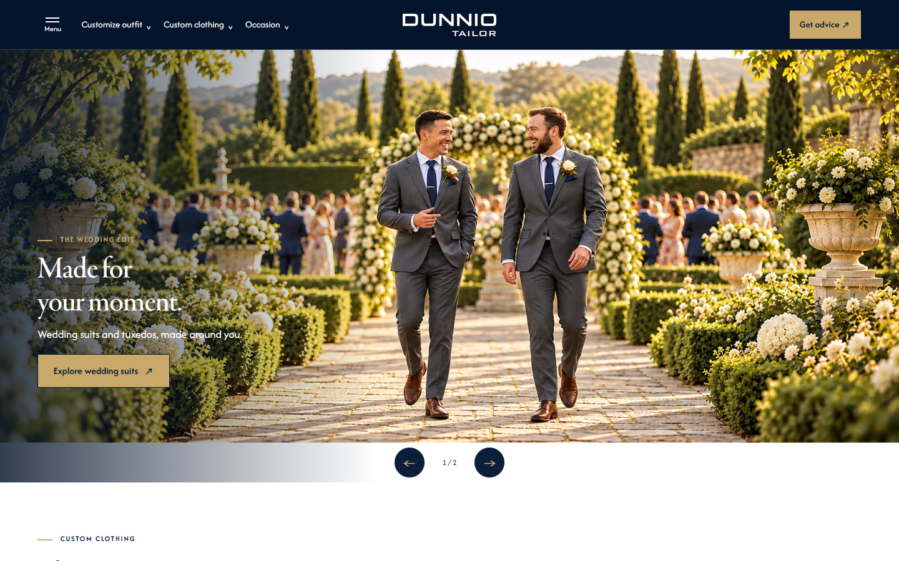
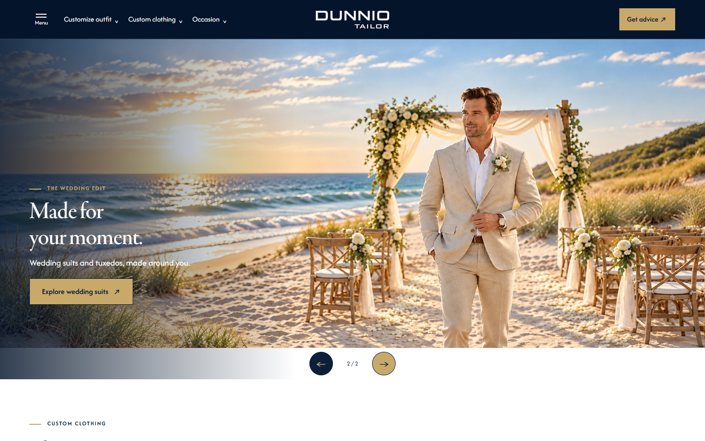
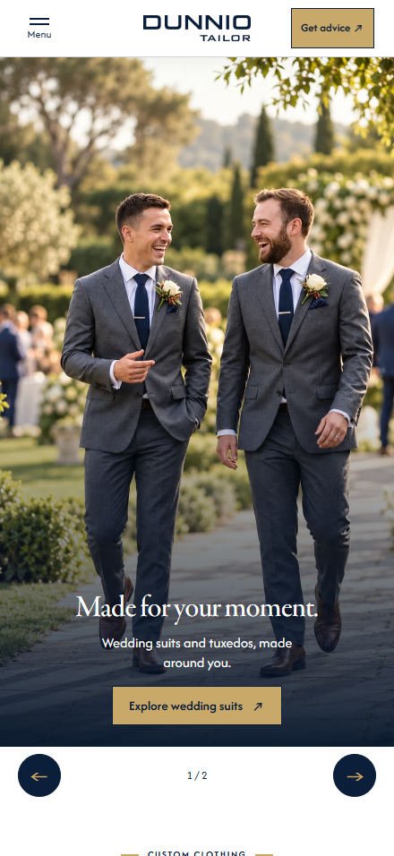

Trạng thái hiện hành của các phiên bản Dunnio Tailor
Cập nhật 15/10/2026 · giờ Việt Nam. Cấu hình homepage được đối chiếu với commit 233efc0 và mã nguồn hiện tại. Tài liệu này ưu tiên hơn các thông số lịch sử Yêu cầu 11–19 khi có khác biệt về Wedding Story. Đây là thông số bản demo đã triển khai, không phải phương án viewport tự co chiều cao được đề xuất trong báo cáo Hockerty.
Mục lục — 8 phần
1. URL và khung banner đang dùng
Breakpoint chọn nguồn ảnh: PC ≥1200px, Tablet 640–1199px, Mobile ≤639px, theo chiều rộng CSS viewport. Breakpoint của từng lưới nội dung có thể khác, ví dụ USP chuyển hai cột dưới 1024px.
| Phiên bản | PC | Tablet | Mobile | Điểm khác biệt |
|---|---|---|---|---|
| v1 Heritage Atelier | Slide 1: 1659×948, gần 7:4; slide 2: 1619×971, gần 5:3 | Hoán đổi hai ảnh PC | SVG 800×1422; compact 800×1000 | Bộ editor chung |
| v2 Design Studio | 3 ảnh 1600×914, gần 7:4 | 3 ảnh 1600×960, 5:3 | 2 ảnh 1122×1402; slide đầu thiếu ảnh dọc riêng | Giữ bộ nguồn hiện có |
| v3 Wedding Story | 1600×914, gần 7:4 | 1600×960, 5:3 | 1122×1402, gần 4:5 | Bản gốc, không đổi theo v3.2 |
| v3.1 Wedding Story | 1600×914, gần 7:4 | 1600×960, 5:3 | Khung 4:5, nguồn 1122×1402 | Copy dưới ảnh trên mobile; có Wedding party và FAQ |
| v3.2 Wedding Story | Khung 16:7, nguồn 1896×829 | 5:3, nguồn 1600×960 | Khung hướng tới 4:7, nguồn 1122×1402 | Copy trong ảnh mobile; bỏ Wedding party và FAQ |
| v4 Modern Essentials | 1600×914, gần 7:4 | 1600×960, 5:3 | 1122×1402, gần 4:5 | Giữ nguyên |
| v5 Fit Concierge | Như bộ editor v1 | Hoán đổi hai ảnh PC | SVG 800×1422; compact 800×1000 | Giữ nguyên |
Các kích thước và cấu hình từng slide nằm trong manifest JSON. “Tỉ lệ ảnh nguồn” và “tỉ lệ khung” được ghi riêng khi khác nhau.
2. Hai ảnh PC hiện hành của v3.2
| Slide | Nội dung | File đang phát | Kích thước / dung lượng |
|---|---|---|---|
| 1 | Hai người trong vườn cưới — ảnh 02-new | wedding-story-v3.2-16x7-02-new.webp | 1896×829 / 389.6 KiB |
| 2 | Chú rể bên bãi biển — ảnh 01 | wedding-story-v3.2-16x7-01.webp | 1896×829 / 285.8 KiB |


File nguồn nằm tại C:\laragon\www\Banner-dunnio\original\wedding-story\processed, tên tương ứng đuôi .png. Cả hai file chứa dữ liệu WebP; file website dùng đuôi .webp và giữ nguyên byte nguồn. 1896/829 ≈2,2871 còn 16/7 ≈2,2857; CSS khóa khung 16:7 và dùng object-fit:contain, không kéo méo ảnh. Chênh lệch làm tròn rất nhỏ.
Ảnh wedding-story-v3.2-16x7-02.webp cũ và các ảnh PC 3:2 vẫn lưu trong repo để truy vết; chúng không còn được v3.2 tham chiếu khi phát banner PC. Tablet và Mobile tiếp tục dùng bộ wedding-story-a/b-5x3.webp và wedding-story-a/b-4x5.webp.
3. Bố cục Wedding Story v3.1 và v3.2
Thứ tự: hero → Wedding party (chỉ v3.1) → products → studio → looks → craft → customer reviews → Style Gallery → FAQ (chỉ v3.1) → closing → USP → footer.
- Products/studio/looks/craft dựa trên v2; bỏ service-section và phần products .fine. Nội dung craft nhấn mạnh thợ may Việt Nam với 15 năm kinh nghiệm.
- Hai bản có hàng điều khiển banner ngay dưới ảnh, cao tối thiểu 64px; nút 48×48px. v3.1 căn giữa; v3.2 trên mobile đặt hai nút về hai phía, cách mép 20px, counter ở giữa.
- v3.1 mobile: ảnh 4:5 → nút → hero-copy trên nền trắng. Wedding party cuộn ngang.
- v3.2 mobile: chữ/CTA nằm gần chân ảnh, ẩn hero eyebrow, hàng nút nằm bên dưới.
H = max(240px, min(1.75 × viewportWidth, 100svh − 128px)); vì vậy màn hình thấp có thể hiển thị khung ngắn hơn 4:7. Nguồn gần 4:5 đượcobject-fit:covervàobject-position:center 35%trong khung dọc. - Eyebrow mobile ở các phần còn lại có hai gạch cân đối. Review một hàng có prev/next, không tự chạy; ảnh/tên/ngày/rating từ nguồn review, đoạn giới thiệu có nhãn Review summary.
- Gallery: bảy ảnh trên PC/Tablet, bốn ảnh trong lưới 2×2 mobile; giảm chiều cao để gom tiêu đề, mô tả, ảnh và See more gallery. Font/zoom lớn vẫn có thể cần cuộn.
- USP mobile: 01/04 nền navy #0b1f3a, chữ gold #C8A96A; 02/03 nền gold, chữ navy. Bố cục hai cột tạo đường chéo. PC/Tablet giữ màu xen kẽ 01/03 navy, 02/04 gold; breakpoint bố cục lưới độc lập với breakpoint ảnh.
- Header và logo trong drawer của hai biến thể không dẫn về index. Footer được giữ nguyên theo yêu cầu ban đầu, bao gồm các liên kết vốn có của footer.
4. Chiều cao banner PC v3.2 và giới hạn một màn hình
Header PC 80px, hàng nút 64px nằm ngoài ảnh. Với W là chiều rộng vùng ảnh CSS, chiều cao ảnh H = W × 7/16. Tổng khối đầu trang thường là 80 + H + 64 khi copy nằm trong ảnh; fallback nội dung hoặc zoom có thể làm khối cao hơn.
| W vùng ảnh | H khung 16:7 | Header + ảnh + hàng nút |
|---|---|---|
| 1280px | 560.0px | 704.0px |
| 1366px | 597.6px | 741.6px |
| 1440px | 630.0px | 774.0px |
| 1920px | 840.0px | 984.0px |
| 2560px | 1120.0px | 1264.0px |
W có thể nhỏ hơn viewport do scrollbar. Không cam kết tất cả cửa sổ PC đều vừa một màn hình: ở W=1920px tổng khoảng 984px, cao hơn viewport 900px. Bản hiện hành giữ tỉ lệ 16:7 do người dùng chọn, chưa dùng chiều cao tự co theo ngân sách viewport của báo cáo Yêu cầu 19.
5. Nguồn chỉnh sửa và quy trình cập nhật
- Cấu hình chung:
assets/banner-config.js. Override PC riêng v3.2:assets/wedding-story-v32-banners.js, được nạp sau cấu hình chung và trướcassets/app.js. assets/wedding-variants.csschứa khung PC v3.2 16:7, khung mobile và các bố cục dùng chung hai biến thể. Không đổi bộ Tablet/Mobile nếu chỉ thay ảnh PC.- Đồng bộ ảnh fallback đầu tiên và width/height trong
tools/build-wedding-variants.cjs, rồi chạynode tools/build-wedding-variants.cjs. Generator này dựng lại v3.1/v3.2 từ v2/v3; không chỉ sửa HTML đầu ra rồi bỏ quên generator. - Khi thay URL/config ảnh, tăng revision script. Hiện v3.2 dùng CSS
request20-r1, JS overriderequest20-r2; v3.1 dùng CSSrequest17-r3. - Chạy
node tools/verify-wedding-v32-banners.cjsvới HTTP preview đang phục vụ dự án.DUNNIO_PREVIEW_URLđổi địa chỉ kiểm thử;DUNNIO_VERIFICATION_OUTPUTđổi file kết quả. Dữ liệu phân biệtviewport.width/heightvớiwidth/heightcủa ảnh hiển thị. - Chạy
node tools/build-version-status-docs.cjsđể dựng lại tài liệu này và manifest. Khi sửa dữ liệu/mẫu của báo cáo Hockerty lịch sử, dùngnode tools/build-hockerty-audit-report.cjs. - Commit các file thuộc bản sửa, push main, chờ Pages báo built cho đúng commit và kiểm tra URL online. Git push thành công chưa đồng nghĩa Pages đã triển khai xong.
Các generator cũ tools/fashion-heroes.cjs, tools/build.cjs, tools/update-balanced-docs.cjs phục vụ các bước trước; đọc phạm vi trước khi chạy để tránh tái tạo hero/hướng dẫn theo thông số cũ. SVG/ZIP vùng an toàn trong banner-templates là tư liệu trước Yêu cầu 17, chưa phải template 16:7 hiện hành.
6. Bằng chứng và trạng thái kiểm tra
- Banner v3.2 mới nhất: hai slide × chín viewport, prev/next, resize, ảnh mặc định không JavaScript, SHA-256 khớp nguồn, không lỗi JavaScript/tràn ngang trong các trường hợp đó. Ma trận gồm PC 1200×900, 1440×900, 1920×1080; Tablet 1199×900, 1032×1376, 820×1180; Mobile 440×956, 390×844, 375×667.
- Kiểm tra cấu trúc hai biến thể ngày 14/10 và footer/USP ngày 14/10 là bằng chứng theo thời điểm, không tự coi là đã chạy lại toàn bộ sau mỗi lần thay ảnh PC.
- Vấn đề footer trong DevTools iPad đã được người dùng xác nhận cuộn được khi chọn Fit to window; không có thay đổi nội dung footer để xử lý việc canvas bị cắt ở mức 75%.
- Báo cáo Hockerty Yêu cầu 19 giữ số đo Dunnio PC 3:2 tại thời điểm khảo sát. Không dùng các con số đó làm số đo của v3.2 16:7 đang chạy.
- Kiểm tra responsive dùng Chrome desktop; chưa xác nhận thiết bị thật, Safari, screen reader, mạng di động hoặc conversion uplift.
- Kiểm tra tài liệu: liên kết nội bộ, mục lục, ảnh minh họa, không tràn ngang ở PC/Mobile và bộ tính 16:7/5:3 có hàng nút 64px. Chạy lại bằng
node tools/verify-current-docs.cjsvới HTTP preview;DUNNIO_DOCUMENTATION_OUTPUTchỉ định nơi lưu kết quả khi kiểm tra online.
7. Ảnh chụp cấu hình hiện hành
Ảnh kiểm tra local 1440×900 và 440×956 với bộ ảnh 02-new; đây là minh họa, không thay thế responsive thực.



8. Lịch sử quyết định banner v3.2
| Bước | Trạng thái |
|---|---|
| Yêu cầu 17 | Tạo v3.1/v3.2; cơ sở PC 7:4, Tablet 5:3; mobile v3.1 4:5, v3.2 hướng tới 4:7 |
| Yêu cầu 18 | Đã từng chuyển riêng PC v3.2 sang 3:2, nguồn 1536×1024 |
| Cập nhật tiếp theo | Đã từng chuyển PC v3.2 sang 5:3, dùng chung nguồn Tablet |
| Yêu cầu 19 | Khảo sát Hockerty, báo cáo và đề xuất; không triển khai cơ chế viewport của đề xuất |
| Yêu cầu 20 — b621c39 | PC 16:7, nguồn mới 1896×829 |
| Thay ảnh — 233efc0 | Thay riêng slide 1 PC từ ảnh 02 sang 02-new; Tablet/Mobile và slide 2 PC giữ nguyên |